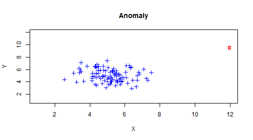

Anomaly Detection
- At work I anaylize software system data
- Most of it isn't interesting, but occasionally something abnormal happens
- My goal is to find out when that happens and why
- To do this I look for anomalies

How to find Anomalies in Data
- There are a couple ways to find them
- Density
- Distance
- Statistical Properties
| Density |
Distance |
Statistical |
| LOF |
Kmeans |
Parametric Models |
| CBOF |
Knn |
Mean, Var, Stdev |
| DENLCUE |
LDOF |
Distribution Assumptions |
Don't Fear!
- Building some of the models mentioned is difficult
- Luckily R has many models already made
- Kmeans is an example
- Caret also has a ton of built in functions for ML and Anomaly Detection
I'll help you get started
Hopefully You Found This Interesting!
- Good luck coming up with your own algorithms
2+2
## [1] 4
Kindest Regards,
Kyle
NA